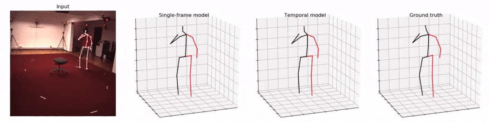
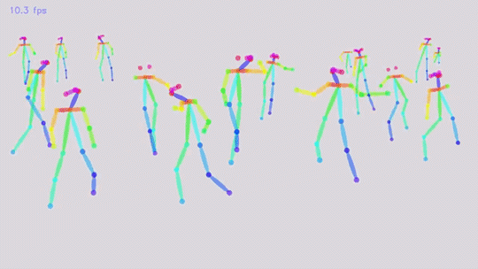

# 百宝箱
在这里记录一些有用的工具集
# 程序员常用工具导航
# 问卷调查工具
体验不错的问卷调查工具、在线考试工具
# ocr
文本定位
https://github.com/eragonruan/text-detection-ctpn
文本识别（支持中文）
https://github.com/tesseract-ocr/tesseract
# AI图像技术
# 通过视频检测人的姿态
https://github.com/facebookresearch/VideoPose3D

# 通过视频检测多人姿态
https://github.com/ZheC/Realtime_Multi-Person_Pose_Estimation

https://github.com/CMU-Perceptual-Computing-Lab/openpose

# 通过视频重建三位动态人体模型
https://github.com/facebookresearch/DensePose

# 人脸识别
https://github.com/ageitgey/face_recognition

# 换脸
源码 https://github.com/deepfakes/faceswap
# web上运行的基于js的人脸识别
https://github.com/justadudewhohacks/face-api.js
教程 https://www.bobobk.com/258.html
# 输入5秒语音，将任何文本转换为这个人的语音
https://google.github.io/tacotron/publications/speaker_adaptation/
# 0-6岁育儿地图